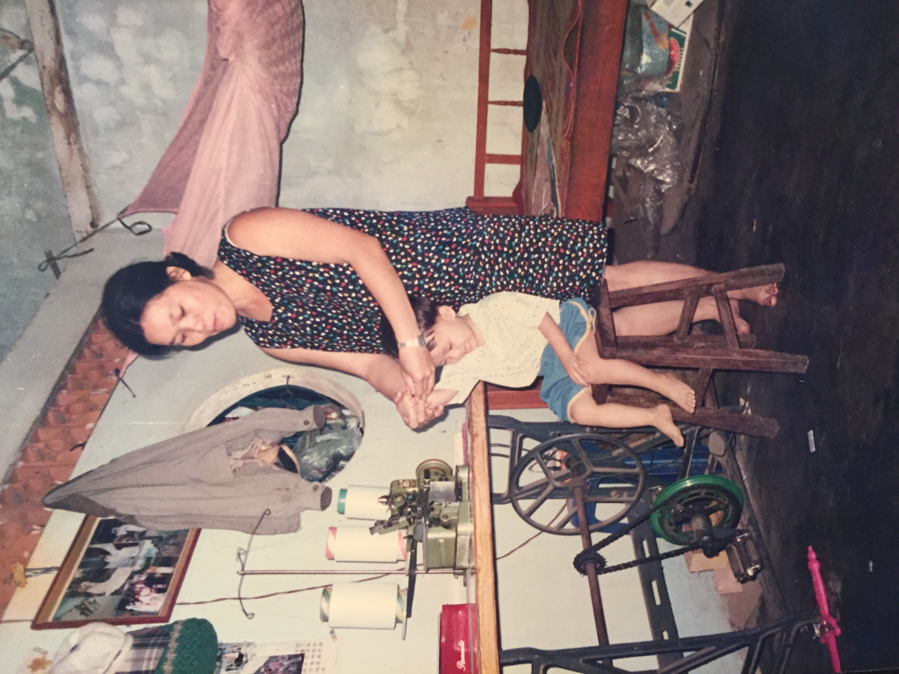

Wednesday, July 17th, 2019
Mom just became a U.S citizen today.
I remember when we were in Saigon, living with uncle Du, your older brother. At that time, I was not in kindergarten yet. I said
- "Mom, they made fun of me for calling you Má Mì. None of them call their mom Má Mì".
You said:
- That is how you call mom in Cantonese.
In Vietnamese and my hometown Chinese dialog, mom is má or mẹ, but not Má Mì. In Vietnamese, Má Mì is a madam for female or a pimp for male. I have been calling the woman of life Má Mì for 23 years.
I remember. Yes, I remember a lot of things. You always say how good my memories are, even though I was just a kid. Later, I learned that human has choices over their memories, especially when they are tied with events.
I remember the time when we were in Saigon mom. You woke up before daylight so that you could make sticky rice to sell for breakfast. I had no idea what time it was yet. I just knew it was very early; I could not keep sleeping without you next to me. You sold some lottery tickets too. I was happy to help you put the tables and chairs out in the morning and took them back at night, by the end of the day. Or at least, I thought I was helping. When I was getting bigger, and you are getting older mom, you told me that I was helping you for just being on your sight. You did not have money to send me to kindergarten.
It was a busy day, just like any day in Saigon. Dad took us on his CD BENLY 50–1998, to go to Dong Nai where we spent more than ten years being farmers. I sat in the back, between you and dad.
"Hò ơi, có con chim đa đa, chồng gần không lấy mà đi lấy chồng xa,… hò ơi". You are from Hue where people have the sweetest accent (in my opinion). There was a lullaby that you usually sang for me. You sang, "there is a bird who did not marry someone near her parents home, but far, so far away." I get up from the hammock "that's you, mom, that's so you." You smiled, hit my forehead in a lovely way, "go back to sleep; you are too smart already."
Mom is from Hue, central Vietnam; Dad is from the Dong Nai, the South. They met after fleeing the country, in Hong Kong.
"Mom, it's so dark, the wind is so strong too. Do you think there is someone outside watching us, mom? From those coffee trees … Mom, look!". You and aunty Kíu quivered. "Mom, can we go back to town with dad and grandparents, please." I was so scared; I knew you were too mom. You found out that it was just a wild cat watching us. After moving to Dong Nai, we worked for our relatives, on their farm. There were days that dad needed to go to town to buy more artificial fertilizer and more farming tools. Someone needed to stay in the shack to look after the coffee and tobacco. You, aunty Kíu and I stayed.
When I was four, you gave me a brother. I did not remember whether I asked for one, but I am sure I have the best one.
At nights, I saw you, and dad count the money, put them in a secret place. A couple of years later, You two bought us a farm, our farm. We built our shack. There were so many rocks on the farm. We started the day by picking the rocks, put them in the same place, made room for plants. Dad was the strongest; he picked the bigger rocks. You were strong too; you picked big rocks. I was a kid, so I picked small rocks or more like I picked the pebbles. Months go by, I was so happy because you and dad brought home an adopted puppy.
There was no electricity on our farm yet. After a long day on the field, we ate, went in a net to avoid mosquitos. You taught me how to read, to write, and to do math with your middle school education. You did not want me to be behind.
I liked the time when dad drove us to town mom. I got to see grandpa and grandma. There was electricity at their place; there was a box with people move in it, as I called. I had no idea it called Television at the time yet. I watched whatever they were watching. I liked it in town because there were many hawkers too. My favorite was lemongrass snails. You bought me a small cup; I wanted another one; you did not get me one. More accurately, you could not buy me more. You were out of money. Coffee and tobacco were very cheap that year. We got to pay out of pocket for fertilizer but did not make any profit.
I saw you and dad argue at nights. How could there be a lot of love if one could not put food on the table? A few months later, on a random morning, you told me to be strong. You took Khoa, my brother with you. You said you just go to the morning market and you would be back in the afternoon. You left. I cried a lot. Dad sent me to kindergarten several months after you were gone. He wanted me to leave the farm to live with my grandparents, so it was easier for me to go to school. I cried a lot in kindergarten too. I hated it. I missed your writing lessons; I miss how you used coffee sticks that we picked up from the farm to teach me how to count. I hated that you left me and I missed you a lot at the same time.
Dad drove me back to the farm every weekend when I had no school.
You picked me up after school like haft a year later. I was confused, shocked, and excited. You hugged me; I cried; your eyes were red, and there was water in it; you cried too. We cried in front of the kindergarten. You and Dad told me that you and my brother needed to leave, to go work for another relative, in another district, to make another source of income. The farm was not enough. I did not understand everything. All I knew was because we needed more money. You left so we could do better. Maybe, I did not know that much either. I just knew that we loved each other, dad, you and my crying brother and I; I believed in us. I did not hate you anymore. You left again. I was so sad. I cried a lot too. I was not scared though because I knew you would be back. Soon.
Mom, as you see, my memories are not special than any other people. They are interrupted. They are tied with events; they are tied with you; that is why and how they stayed.
Mom, as you see, my memories are not special than any other people. They are interrupted. They are tied with events; they are tied with you; that is why and how they stayed.
For the past three years, I had seen how persistence you were when you study for your naturalized citizen test. You barely know English, besides the amount of language help you get by at the nail salons. You listened to the online material on the bus, at work while there were no customers, at home after a long day at work. You practiced by writing out all the sentences. You asked my brother and me to read it for you.
A week before the test, you helped me cut my nails, just like the way you did when I was a kid. Maybe I have always been a kid, to you and for you.
You passed the test, first try.
I have written many papers. I have written about characters and people who I enjoyed reading and knowing more about but have very little to none related to my life. I wrote about you too. When I was in elementary school, a teacher asked me to write a paragraph about one of your loved ones.
I have written many papers. I have written about characters and people who I enjoyed reading and knowing more about but have very little to none related to my life. I wrote about you too. When I was in elementary school, a teacher asked me to write a paragraph about one of your loved ones.
Walking out Paramount theater, I wanted to write about you, for you and from you, mom. From you, because I was a part of your body, you carried me for more than nine months. You told me that I was not a good boy. I kicked and turned a lot; I made you did not want to eat; I caused a lot of morning sickness. I am sorry, Má Mì. If I had known, I would have done it differently.
We immigrated to the U.S. I knew it was not for dad either for you. It was for my brother and I. It has always been like that, your life.
I want to live the rest of my life, not just for me, but for you too.
Má Mì, I am your gradian angle, …just like you have always been mine.
(mom cut my nails when I was a kid)
